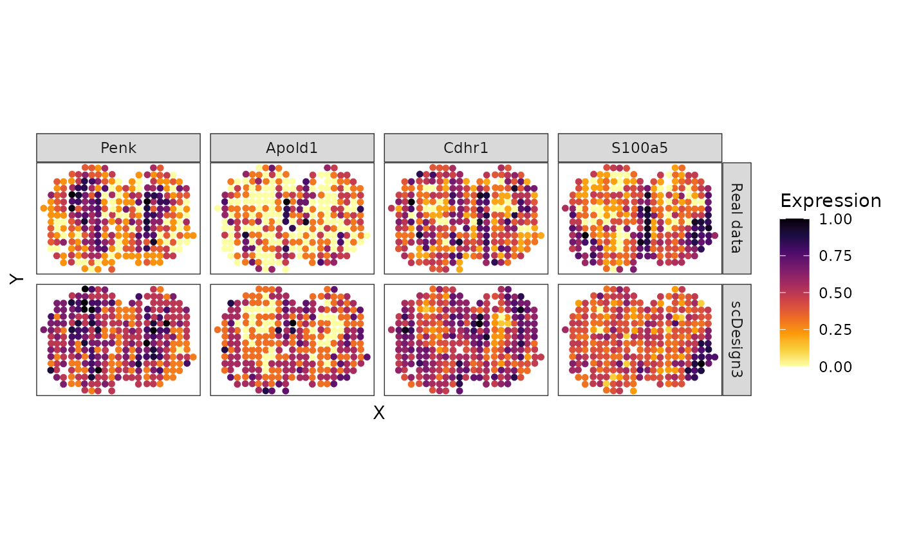

Simulate spot-resolution spatial data for cell-type deconvolution
Dongyuan Song
Bioinformatics IDP, University of California, Los Angelesdongyuansong@ucla.edu
Qingyang Wang
Department of Statistics, University of California, Los Angelesqw802@g.ucla.edu
3 April 2023
Source:../../scDesign3/code/vignettes/scDesign3-spatial-deconvolution.Rmd
scDesign3-spatial-deconvolution.Rmd
library(scDesign3)
library(SingleCellExperiment)
library(ggplot2)
library(dplyr)
library(viridis)
library(IOBR)
library(scatterpie)
theme_set(theme_bw())Introduction
In this tutorial, we show how to use scDesign3 to simulate the spot-resolution spatial data, which each spot is a mix of cells from different cell types.
Read in the reference data
The paired scRNA-seq and spatial data were used in CARD. We pre-select the top cell-type marker genes.
MOBSC_sce <- readRDS((url("https://www.dropbox.com/s/650bsdt2gmkcvs5/MOBSC_sce.rds?raw=1")))
MOBSP_sce <- readRDS((url("https://www.dropbox.com/s/czvptdt4vzi7q9m/MOBSP_sce.rds?raw=1")))
print(MOBSC_sce)
#> class: SingleCellExperiment
#> dim: 182 12640
#> metadata(0):
#> assays(2): counts logcounts
#> rownames(182): Grin2b Prkca ... Zic1 Tpi1
#> rowData names(1): rownames.count.
#> colnames(12640): WT1_AAACCTGAGCTGCGAA WT1_AAACCTGGTTTGGCGC ...
#> OC2_TAGTTGGTCGCGATCG OC2_TTGCGTCAGGATCGCA
#> colData names(4): cellType sampleInfo sizeFactor cell_type
#> reducedDimNames(0):
#> mainExpName: NULL
#> altExpNames(0):
print(MOBSP_sce)
#> class: SingleCellExperiment
#> dim: 182 278
#> metadata(0):
#> assays(1): counts
#> rownames(182): Grin2b Prkca ... Zic1 Tpi1
#> rowData names(0):
#> colnames(278): 16.918x16.996 18.017x17.034 ... 25.134x28.934
#> 29.961x18.97
#> colData names(2): spatial1 spatial2
#> reducedDimNames(0):
#> mainExpName: NULL
#> altExpNames(0):Simulation
We first use scDesign3 to estimate the cell-type reference from scRNA-seq data.
MOBSC_data <- construct_data(
sce = MOBSC_sce,
assay_use = "counts",
celltype = "cell_type",
pseudotime = NULL,
spatial = NULL,
other_covariates = NULL,
corr_by = "1"
)
MOBSC_marginal <- fit_marginal(
data = MOBSC_data,
predictor = "gene",
mu_formula = "cell_type",
sigma_formula = "cell_type",
family_use = "nb",
n_cores = 2,
usebam = FALSE,
parallelization = "pbmcmapply"
)
MOBSC_copula <- fit_copula(
sce = MOBSC_sce,
assay_use = "counts",
marginal_list = MOBSC_marginal,
family_use = "nb",
copula = "gaussian",
n_cores = 2,
new_covariate = NULL,
input_data = MOBSC_data$dat
)
MOBSC_para <- extract_para(
sce = MOBSC_sce,
marginal_list = MOBSC_marginal,
n_cores = 2,
family_use = "nb",
new_covariate = NULL
)
MOBSC_newcount <- simu_new(
sce = MOBSC_sce,
mean_mat = MOBSC_para$mean_mat,
sigma_mat = MOBSC_para$sigma_mat,
zero_mat = MOBSC_para$zero_mat,
quantile_mat = NULL,
copula_list = MOBSC_copula$copula_list,
n_cores = 2,
family_use = "nb",
input_data = MOBSC_data$dat,
new_covariate = MOBSC_data$new_covariate
)
MOBSP_data <- construct_data(
sce = MOBSP_sce,
assay_use = "counts",
celltype = NULL,
pseudotime = NULL,
spatial = c("spatial1", "spatial2"),
other_covariates = NULL,
corr_by = "1"
)
MOBSP_marginal <- fit_marginal(
data = MOBSP_data,
predictor = "gene",
mu_formula = "s(spatial1, spatial2, bs = 'gp', k = 50, m = c(1, 2, 1))",
sigma_formula = "1",
family_use = "nb",
n_cores = 2,
usebam = FALSE,
parallelization = "pbmcmapply"
)
MOBSP_copula <- fit_copula(
sce = MOBSP_sce,
assay_use = "counts",
marginal_list = MOBSP_marginal,
family_use = "nb",
copula = "gaussian",
n_cores = 2,
new_covariate = NULL,
input_data = MOBSP_data$dat
)
MOBSP_para <- extract_para(
sce = MOBSP_sce,
marginal_list = MOBSP_marginal,
n_cores = 2,
family_use = "nb",
new_covariate = NULL
)Now we get the fitted models for scRNA-seq and spatial data. We need to extract their mean parameters (i.e., expected expression values).
MOBSC_sig_matrix <- sapply(cell_type, function(x) {
rowMeans(t(MOBSC_para$mean_mat)[, colData(MOBSC_sce)$cellType %in% x])
})
MOBSP_matrix <- (t(MOBSP_para$mean_mat))We use CIBERSORT to decompose each spot’s expected expression into cell-type proportions. This step is to set the true cell-type proportions. Please note you can also use other decomposition methods or set the proportion mannully if you have your own design.
sig_matrix <- as.data.frame(MOBSC_sig_matrix)
mixture_file <- as.data.frame(MOBSP_matrix)
proportion_mat <- IOBR::CIBERSORT(sig_matrix, mixture_file, QN = FALSE, absolute = FALSE, perm = 10)
proportion_mat <- proportion_mat[, 1:4]We can visualzie the proportions by pie-chart.
colors_cell_type <- c("#E69F00", "#56B4E9", "#009E73",
"#0072B2")
d_pie <- as_tibble(colData(MOBSP_sce), rownames = "cell") %>% bind_cols(as_tibble(proportion_mat)) %>% dplyr::mutate(region = seq_len(dim(MOBSP_sce)[2])) %>% dplyr::mutate(X= spatial1, Y = spatial2)
p_pie_plot <- ggplot() + geom_scatterpie(aes(x=X, y=Y, group=region), data=d_pie ,
cols = cell_type, color=NA) + coord_fixed(ratio = 1) +
scale_fill_manual(values = colors_cell_type) + coord_equal()+ theme_bw() + theme(legend.position = "left") + theme(
panel.grid.minor = element_blank(),
panel.grid.major = element_blank(),
axis.text.x=element_blank(),
axis.ticks.x=element_blank(),
axis.text.y=element_blank(),
axis.ticks.y=element_blank())+ guides(fill=guide_legend(title="Cell type"))
p_pie_plot
Then we can simulate new spatial data where each spot is the sum of 50 cells/5 (therefore on average 10 cells per spot). Increasing the number of cells will make the spatial data smoother (closer to the expected spatial expression).
set.seed(123)
MOBSCSIM_sce <- MOBSC_sce
counts(MOBSCSIM_sce) <- MOBSC_newcount
MOBSP_new_mixture <- (apply(proportion_mat, 1, function(x) {
n = 50
rowSums(sapply(cell_type, function(y) {
index <- sample(which(colData(MOBSCSIM_sce)$cell_type==y), size = n, replace = FALSE)
rowSums(MOBSC_newcount[, index])*x[y]
}))
}))
MOBSP_new_mixture <- MOBSP_new_mixture/5
### Ceiling to integer
MOBSP_new_mixture <- ceiling(MOBSP_new_mixture)
MOBSPMIX_sce <- MOBSP_sce
counts(MOBSPMIX_sce) <- as.matrix(MOBSP_new_mixture)Finally, we can check the simulated results. We use four cell-type marker genes as the example.
MOBSC_sig_matrix <- sapply(cell_type, function(x) {
rowMeans(t(MOBSC_para$mean_mat)[, colData(MOBSC_sce)$cellType %in% x])
})
MOBSP_sc_mixture <- tcrossprod(as.matrix(MOBSC_sig_matrix), as.matrix(proportion_mat))
rownames(MOBSP_sc_mixture) <- rownames(MOBSP_new_mixture)
location <- colData(MOBSP_sce)
MOBSP_real_tbl <- as_tibble(t(log1p(counts(MOBSP_sce)))) %>% dplyr::mutate(X = location$spatial1,
Y = location$spatial2) %>%
tidyr::pivot_longer(-c("X", "Y"), names_to = "Gene", values_to = "Expression") %>% dplyr::mutate(Method = "Real data")
MOBSP_real_tbl <- transform(MOBSP_real_tbl, Expression=ave(Expression, Gene, FUN=scales::rescale))
MOBSP_mixture_tbl <- as_tibble(t(log1p(MOBSP_new_mixture))) %>% dplyr::mutate(X = location$spatial1,
Y = location$spatial2) %>%
tidyr::pivot_longer(-c("X", "Y"), names_to = "Gene", values_to = "Expression") %>% dplyr::mutate(Method = "scDesign3")
MOBSP_mixture_tbl <- transform(MOBSP_mixture_tbl, Expression=ave(Expression, Gene, FUN=scales::rescale))
MOBSP_tbl <- bind_rows(list(MOBSP_real_tbl, MOBSP_mixture_tbl))
MOBSC_marker <- c("Penk", "Apold1", "Cdhr1", "S100a5")
p_MOB_prop <- MOBSP_tbl %>% dplyr::filter(Gene %in% MOBSC_marker) %>% dplyr::mutate(Gene = factor(Gene, levels = MOBSC_marker)) %>% ggplot(aes(x = X, y = Y, color = Expression)) + ggrastr::rasterize(geom_point(size = 1), dpi = 300) + scale_colour_gradientn(colors = viridis_pal(option = "B", direction = -1)(10), limits=c(0, 1)) + coord_fixed(ratio = 1) + facet_grid(Method ~ Gene ) + theme_bw() + theme(legend.position = "right") + theme(
panel.grid.minor = element_blank(),
panel.grid.major = element_blank(),
axis.text.x=element_blank(),
axis.ticks.x=element_blank(),
axis.text.y=element_blank(),
axis.ticks.y=element_blank())
p_MOB_prop
Session information
sessionInfo()
#> R version 4.2.2 Patched (2022-11-10 r83330)
#> Platform: x86_64-pc-linux-gnu (64-bit)
#> Running under: Ubuntu 20.04.5 LTS
#>
#> Matrix products: default
#> BLAS: /usr/lib/x86_64-linux-gnu/openblas-pthread/libblas.so.3
#> LAPACK: /usr/lib/x86_64-linux-gnu/openblas-pthread/liblapack.so.3
#>
#> locale:
#> [1] LC_CTYPE=en_US.UTF-8 LC_NUMERIC=C
#> [3] LC_TIME=en_US.UTF-8 LC_COLLATE=en_US.UTF-8
#> [5] LC_MONETARY=en_US.UTF-8 LC_MESSAGES=en_US.UTF-8
#> [7] LC_PAPER=en_US.UTF-8 LC_NAME=C
#> [9] LC_ADDRESS=C LC_TELEPHONE=C
#> [11] LC_MEASUREMENT=en_US.UTF-8 LC_IDENTIFICATION=C
#>
#> attached base packages:
#> [1] grid stats4 stats graphics grDevices utils datasets
#> [8] methods base
#>
#> other attached packages:
#> [1] scatterpie_0.1.8 IOBR_0.99.9
#> [3] tidyHeatmap_1.8.1 ComplexHeatmap_2.12.1
#> [5] survival_3.5-3 ggpubr_0.5.0
#> [7] tibble_3.1.8 viridis_0.6.2
#> [9] viridisLite_0.4.1 dplyr_1.0.10
#> [11] ggplot2_3.4.0 SingleCellExperiment_1.20.0
#> [13] SummarizedExperiment_1.28.0 Biobase_2.58.0
#> [15] GenomicRanges_1.50.2 GenomeInfoDb_1.34.6
#> [17] IRanges_2.32.0 S4Vectors_0.36.1
#> [19] BiocGenerics_0.44.0 MatrixGenerics_1.10.0
#> [21] matrixStats_0.63.0 scDesign3_0.99.1
#> [23] BiocStyle_2.24.0
#>
#> loaded via a namespace (and not attached):
#> [1] ragg_1.2.5 tidyr_1.2.1
#> [3] bit64_4.0.5 knitr_1.41
#> [5] irlba_2.3.5.1 DelayedArray_0.24.0
#> [7] data.table_1.14.6 KEGGREST_1.36.3
#> [9] RCurl_1.98-1.9 doParallel_1.0.17
#> [11] generics_0.1.3 preprocessCore_1.58.0
#> [13] ScaledMatrix_1.4.1 cowplot_1.1.1
#> [15] RSQLite_2.2.20 proxy_0.4-27
#> [17] bit_4.0.5 tzdb_0.3.0
#> [19] xml2_1.3.3 lubridate_1.9.0
#> [21] assertthat_0.2.1 tidyverse_1.3.2
#> [23] gargle_1.2.1 xfun_0.36
#> [25] hms_1.1.2 jquerylib_0.1.4
#> [27] evaluate_0.19 fansi_1.0.3
#> [29] dendextend_1.17.1 dbplyr_2.2.1
#> [31] readxl_1.4.1 km.ci_0.5-6
#> [33] DBI_1.1.3 geneplotter_1.74.0
#> [35] googledrive_2.0.0 purrr_1.0.1
#> [37] ellipsis_0.3.2 corrplot_0.92
#> [39] backports_1.4.1 bookdown_0.31
#> [41] annotate_1.74.0 sparseMatrixStats_1.10.0
#> [43] vctrs_0.5.1 Cairo_1.6-0
#> [45] abind_1.4-5 cachem_1.0.6
#> [47] withr_2.5.0 ggforce_0.4.1
#> [49] gamlss_5.4-10 mclust_6.0.0
#> [51] cluster_2.1.4 crayon_1.5.2
#> [53] genefilter_1.78.0 glmnet_4.1-6
#> [55] pkgconfig_2.0.3 labeling_0.4.2
#> [57] tweenr_2.0.2 vipor_0.4.5
#> [59] nlme_3.1-162 rlang_1.0.6
#> [61] lifecycle_1.0.3 gamlss.data_6.0-2
#> [63] modelr_0.1.10 rsvd_1.0.5
#> [65] ggrastr_1.0.1 cellranger_1.1.0
#> [67] rprojroot_2.0.3 polyclip_1.10-4
#> [69] GSVA_1.44.5 graph_1.74.0
#> [71] Matrix_1.5-1 KMsurv_0.1-5
#> [73] carData_3.0-5 Rhdf5lib_1.20.0
#> [75] zoo_1.8-11 reprex_2.0.2
#> [77] beeswarm_0.4.0 GlobalOptions_0.1.2
#> [79] googlesheets4_1.0.1 png_0.1-8
#> [81] rjson_0.2.21 bitops_1.0-7
#> [83] rhdf5filters_1.10.0 Biostrings_2.64.1
#> [85] blob_1.2.3 DelayedMatrixStats_1.20.0
#> [87] shape_1.4.6 stringr_1.5.0
#> [89] readr_2.1.3 rstatix_0.7.1
#> [91] ggsignif_0.6.4 beachmat_2.14.0
#> [93] scales_1.2.1 lpSolve_5.6.18
#> [95] memoise_2.0.1 GSEABase_1.58.0
#> [97] magrittr_2.0.3 zlibbioc_1.44.0
#> [99] compiler_4.2.2 RColorBrewer_1.1-3
#> [101] clue_0.3-63 DESeq2_1.36.0
#> [103] cli_3.6.0 XVector_0.38.0
#> [105] patchwork_1.1.2 MASS_7.3-58.2
#> [107] mgcv_1.8-41 limSolve_1.5.6
#> [109] tidyselect_1.2.0 stringi_1.7.12
#> [111] forcats_0.5.2 textshaping_0.3.6
#> [113] highr_0.10 yaml_2.3.6
#> [115] BiocSingular_1.12.0 locfit_1.5-9.7
#> [117] survMisc_0.5.6 pbmcapply_1.5.1
#> [119] sass_0.4.4 tools_4.2.2
#> [121] timechange_0.2.0 parallel_4.2.2
#> [123] circlize_0.4.15 gamlss.dist_6.0-5
#> [125] foreach_1.5.2 gridExtra_2.3
#> [127] farver_2.1.1 digest_0.6.31
#> [129] BiocManager_1.30.19 quadprog_1.5-8
#> [131] Rcpp_1.0.9 car_3.1-1
#> [133] broom_1.0.2 httr_1.4.4
#> [135] survminer_0.4.9 AnnotationDbi_1.58.0
#> [137] colorspace_2.0-3 rvest_1.0.3
#> [139] XML_3.99-0.13 fs_1.5.2
#> [141] splines_4.2.2 pkgdown_2.0.7
#> [143] systemfonts_1.0.4 xtable_1.8-4
#> [145] jsonlite_1.8.4 ggfun_0.0.9
#> [147] R6_2.5.1 pillar_1.8.1
#> [149] htmltools_0.5.4 glue_1.6.2
#> [151] fastmap_1.1.0 BiocParallel_1.32.5
#> [153] class_7.3-21 codetools_0.2-19
#> [155] mvtnorm_1.1-3 utf8_1.2.2
#> [157] lattice_0.20-45 bslib_0.4.2
#> [159] curl_5.0.0 ggbeeswarm_0.7.1
#> [161] limma_3.54.0 rmarkdown_2.19
#> [163] desc_1.4.2 munsell_0.5.0
#> [165] e1071_1.7-12 GetoptLong_1.0.5
#> [167] rhdf5_2.42.0 GenomeInfoDbData_1.2.9
#> [169] iterators_1.0.14 HDF5Array_1.26.0
#> [171] haven_2.5.1 gtable_0.3.1